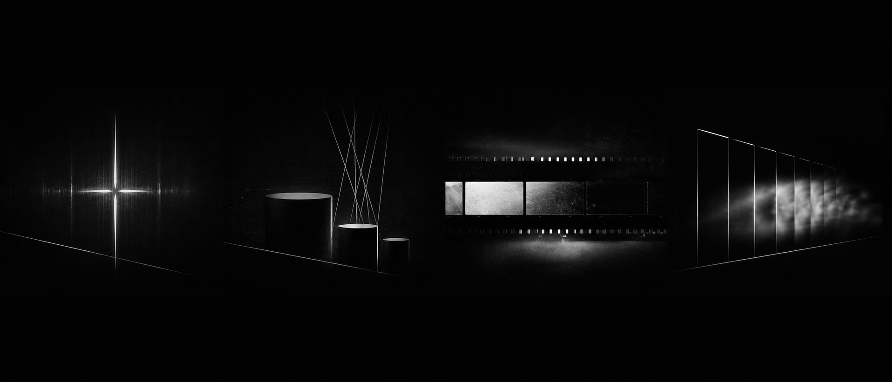
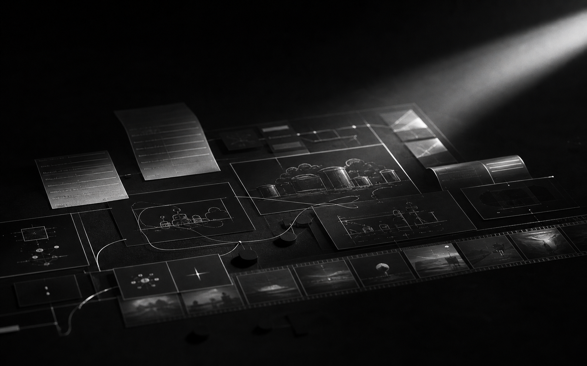

门店增长系统
围绕餐饮、茶饮、花店、咖啡、零售等门店，搭建选题、短视频、活动、私域和复盘机制。
FISHLIGHT 面向真实业务交付：门店要获客，企业要提效，品牌要升级， 内容要稳定生产。AI 是底层能力，结果要能被团队使用。
围绕餐饮、茶饮、花店、咖啡、零售等门店，搭建选题、短视频、活动、私域和复盘机制。
把企业内部资料、销售场景、培训内容和重复流程，整理成可演示、可执行的 AI 工作流。
从定位、命名、视觉方向、品牌手册到传播语言，把项目包装成更容易被理解和购买的品牌。
用 AI 生成和组织脚本、分镜、素材、广告短片、产品视频和持续内容生产线。

品牌、内容、视频和工作流最终都要回到获客、成交、提效和团队执行。
Signal 01 / 产品与商业视频
产品不只是静物图。它可以被拆成价格带、使用场景、内容切口、广告视频和复盘模型， 从一个物体变成可传播、可成交、可持续生产的商业信号。
Signal 02 / 品牌全案
定位、视觉、空间、产品、内容和传播语言统一后，客户才更容易理解你是谁。

Signal 03 / 内容增长
选题、脚本、素材、发布和复盘形成固定节奏，门店和品牌才不会一直临时救火。
Signal 04 / 企业落地
企业真正需要的不是工具清单，而是场景、资料、演示、试点路径和可复制 SOP。
Signal 05 / 知识库与工作流
把资料、案例、提示词、模板和复盘沉淀成知识库，让项目经验持续复利。
先判断项目阶段、客户是谁、内容如何转化，再把品牌、视频、资料、 流程和工具组织成一套能运行的交付系统。
确认商业目标、真实约束、用户场景、内容问题和最短验证路径。
建立品牌定位、视觉方向、内容结构、脚本分镜和交付物框架。
用生成工具、知识库和自动化流程承担素材、文案、视频和资料生产。
用真实发布、销售、客户反馈和团队使用情况更新下一轮判断。
Start With A Diagnostic / 从一次诊断开始
适合的起点：门店增长、品牌升级、广告视频、电商新品验证、企业 AI 培训、 知识库自动化、内部流程改造。先看清问题，再决定怎么做。